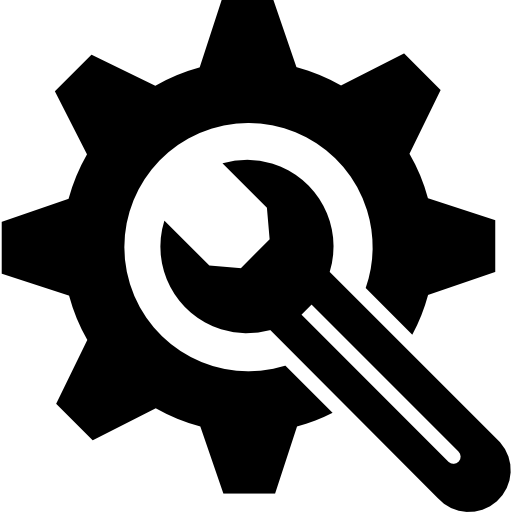

<div>
  <div class="wrapper">

    <div class="setting-component">
      <div matTooltip="Позиция" class="number-component">{{part.position_on_plan}}</div>
      <div matTooltip="Наименование" class="name-component">
        <p>{{part.equipment_name}}</p>
      </div>
      <div (click)="serveOn()" *ngIf="!service" class="border" matTooltip="Обслужить">
        
      </div>
      <div (click)="serveOff()" *ngIf="service" class="border" matTooltip="Свернуть">
        
      </div>
    </div>

    <div class="setting-component__date">
      <div class="date">Дата планового обслуживания <br> {{part.date_last_service}}</div>
      <div class="date">Дата последнего обслуживания <br> {{part.date_last_service}}</div>
    </div>

    <div class="open-setting-component__btn" *ngIf="service && part.service">
      <div class="btn">
        <button mat-raised-button color="accent">Выполнить плановый ремонт</button>
      </div>
      <div class="btn">
        <button mat-raised-button color="accent">Выполнить внеплановый ремонт</button>
      </div>
    </div>
  </div>
</div>
